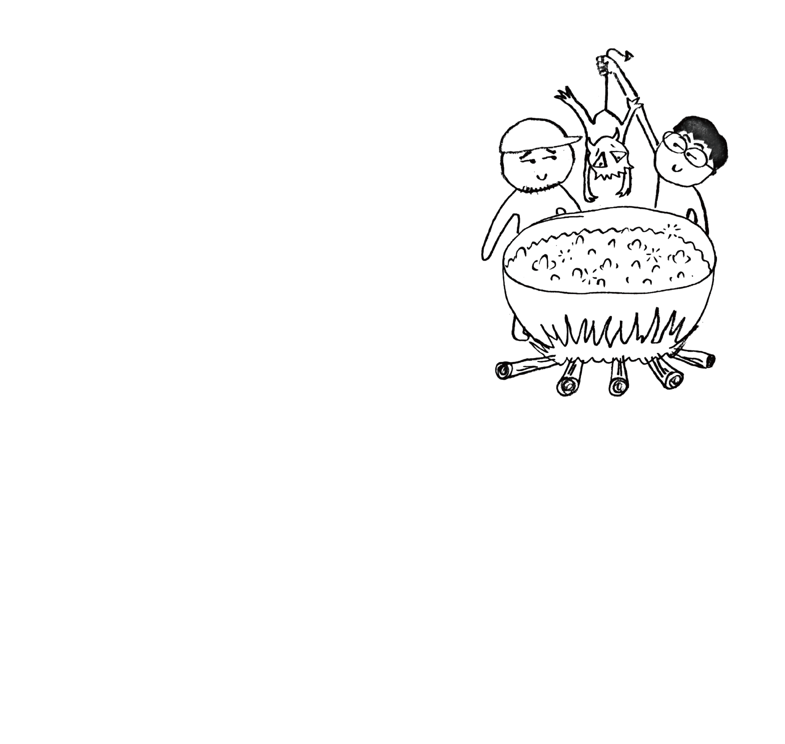

noo1
2026.10.02
Sun Yizhou / Toshimaru Nakamura - oil-fried ghost
- 1. heat oil in a wok
- 2. ghost is laughing
- 3. from the hell
- 4. to
- 5. another hell
- 6. let's eat breakfast!
Sun Yizhou: relays, feedbacks
Toshimaru Nakamura: no-input mixing board
all sounds by Sun Yizhou and Toshimaru Nakamura
recorded at aloe office, beijing summer, august 5, 2025
edited and mixed by Sun Yizhou
mastered by Toshimaru Nakamura
artwork: 41
cd label photo: Konini
design: Yifan
